Self-hosting Spark with the Spark Kubernetes Operator
April 2022
Gavin Campbell
gavin@gavincampbell.dev
Why?
Managed services are the right way for most customers

Not widely available beyond the big three...
Who isn't using one of the big three?
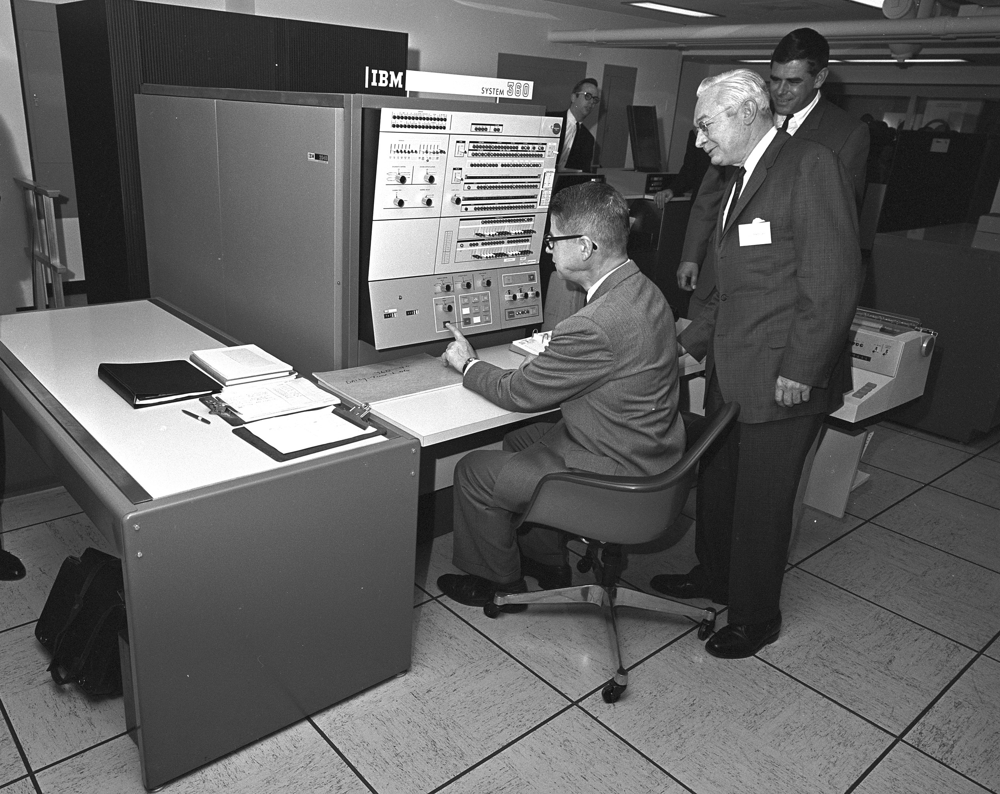Reasons not to use the Big Three
- You are one of the big three
- You are bigger than the big three
- You are small, and still happy with the VPS provider you started with
- You need to store data in a jurisdiction where the big three aren't present
Is it cheaper to self-host Spark?

Options for self-hosting spark
Francoisraab, CC BY-SA 4.0, via Wikimedia Commons
{kind=link}
Options for self-hosting spark
Francoisraab, CC BY-SA 4.0, via Wikimedia Commons
- Standalone clusters
- YARN
- Kubernetes
Managing Kubernetes on
bare metal is a really fulfilling experience...
Brad, 23 years old
Kubernetes Support in Spark

Image: Apache Software Foundation
Submitting a Job to a Kubernetes Cluster
spark-submit \
--master k8s://https://162.55.43.10:6443 \
--deploy-mode cluster \
--name example-py \
--conf spark.kubernetes.container.image=docker.io/gcdotd/team_image:v1.0 \
--conf spark.kubernetes.namespace=spark-ns \
--conf spark.kubernetes.authenticate.driver.serviceAccountName=spark-svc-ac \
--conf spark.hadoop.fs.s3a.endpoint=http://162.55.43.10:9000 \
--conf spark.hadoop.fs.s3a.access.key=$MINIO_USER \
--conf spark.hadoop.fs.s3a.secret.key=$MINIO_PASSWORD \
--conf spark.hadoop.fs.s3a.impl=org.apache.hadoop.fs.s3a.S3AFileSystem \
--conf spark.hadoop.fs.s3a.path.style.access=true \
--conf spark.sql.catalog.spark_catalog=org.apache.spark.sql.delta.catalog.DeltaCatalog \
--conf spark.sql.extensions=io.delta.sql.DeltaSparkSessionExtension \
s3a://code/example.py
Kubernetes executing the job
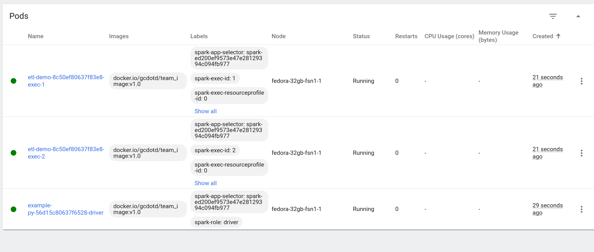Kubernetes executing the job
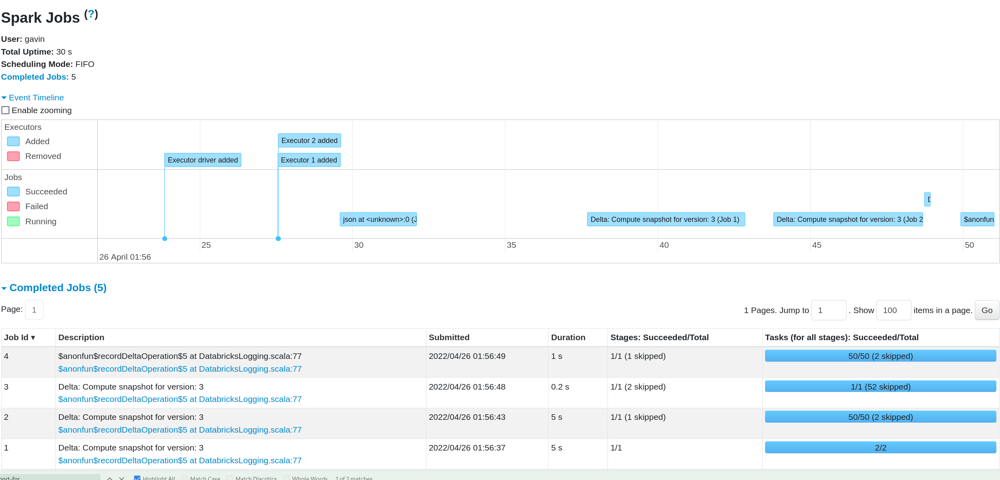The Spark Kubernetes Operator

Image: Google Cloud Platform
submitting spark jobs with kubectl
#
# Copyright 2018 Google LLC
#
# Licensed under the Apache License, Version 2.0 (the "License");
# you may not use this file except in compliance with the License.
# You may obtain a copy of the License at
#
# https://www.apache.org/licenses/LICENSE-2.0
#
# Unless required by applicable law or agreed to in writing, software
# distributed under the License is distributed on an "AS IS" BASIS,
# WITHOUT WARRANTIES OR CONDITIONS OF ANY KIND, either express or implied.
# See the License for the specific language governing permissions and
# limitations under the License.
#
# Support for Python is experimental, and requires building SNAPSHOT image of Apache Spark,
# with `imagePullPolicy` set to Always
apiVersion: "sparkoperator.k8s.io/v1beta2"
kind: SparkApplication
metadata:
name: pyspark-pi
namespace: default
spec:
type: Python
pythonVersion: "3"
mode: cluster
image: "gcr.io/spark-operator/spark-py:v3.1.1"
imagePullPolicy: Always
mainApplicationFile: local:///opt/spark/examples/src/main/python/pi.py
sparkVersion: "3.1.1"
restartPolicy:
type: OnFailure
onFailureRetries: 3
onFailureRetryInterval: 10
onSubmissionFailureRetries: 5
onSubmissionFailureRetryInterval: 20
driver:
cores: 1
coreLimit: "1200m"
memory: "512m"
labels:
version: 3.1.1
serviceAccount: spark
executor:
cores: 1
instances: 1
memory: "512m"
labels:
version: 3.1.1
The project
- Managed Kubernetes
- Emphasis on Data Engineering
- Mostly Python
- Store data in Delta Tables
- Using the Spark Kubernetes Operator
- Integration with Azure Arc for Kubernetes
The Staging Area
[
{
"orderTimestamp": "2022-01-13T22:30:26",
"kebabType": "Doner",
"kebabMeat": "Chicken",
"salad": true,
"sauces": [
"Chilli"
]
},
{
"orderTimestamp": "2022-01-13T22:31:24",
"kebabType": "Doner",
"kebabMeat": "Chicken",
"salad": true,
"sauces": [
"Chilli",
"Garlic"
]
},
{
"orderTimestamp": "2022-01-13T22:31:29",
"kebabType": "Adana",
"kebabMeat": "Lamb",
"salad": false,
"sauces": [
"Garlic"
]
},
{
"orderTimestamp": "2022-01-13T22:32:29",
"kebabTy pe": "Shish",
"kebabMeat": "Lamb",
"salad": false,
"sauces": [
"Garlic"
]
},
{
"orderTimestamp": "2022-01-13T22:32:34",
"kebabType": "Adana",
"kebabMeat": "Lamb",
"salad": false,
"sauces": [
"Garlic"
]
}
]
The code
from pyspark.sql import SparkSession
from pyspark.sql.functions import md5, col, max as to_the_max, to_timestamp
from delta.tables import *
from os import path, environ
spark = SparkSession.builder.appName("etl-demo").getOrCreate()
source_path = "s3a://staging/"
output_path = "s3a://output/"
new_orders = spark.read.option("multiline", "true").json(source_path)
output_df = new_orders.select(
(md5("kebabType")).alias("kebab_type_id"), col("kebabType").alias("kebab_type_name")
).dropDuplicates()
dim_kebab_type = (
DeltaTable.createIfNotExists(spark)
.tableName("dim_kebab_type")
.addColumn("kebab_type_id", dataType="STRING")
.addColumn("kebab_type_name", dataType="STRING")
.location(path.join(output_path, "dim_kebab_type"))
.execute()
)
dim_kebab_type.alias("dim_kebab_type").merge(
source=output_df.alias("new_kebabs"),
condition="dim_kebab_type.kebab_type_id = new_kebabs.kebab_type_id",
).whenNotMatchedInsert(
values={
"kebab_type_id": "new_kebabs.kebab_type_id",
"kebab_type_name": "new_kebabs.kebab_type_name",
}
).execute()
fact_kebab_sales = (
DeltaTable.createIfNotExists(spark)
.tableName("fact_kebab_sales")
.addColumn("order_timestamp", dataType="TIMESTAMP")
.addColumn("kebab_type_id", dataType="STRING")
.location(path.join(output_path, "fact_kebab_sales"))
.execute()
)
kebab_types = spark.table("dim_kebab_type")
high_watermark = (
spark.table("fact_kebab_sales").select(to_the_max("order_timestamp")).first()[0]
)
if high_watermark is not None:
new_orders = new_orders.filter(new_orders["orderTimestamp"] > high_watermark)
new_orders.join(
kebab_types, new_orders.kebabType == kebab_types.kebab_type_name
).select(
to_timestamp(col("orderTimestamp")).alias("order_timestamp"), col("kebab_type_id")
).write.format(
"delta"
).mode(
"append"
).saveAsTable(
"fact_kebab_sales"
)
The output bucket
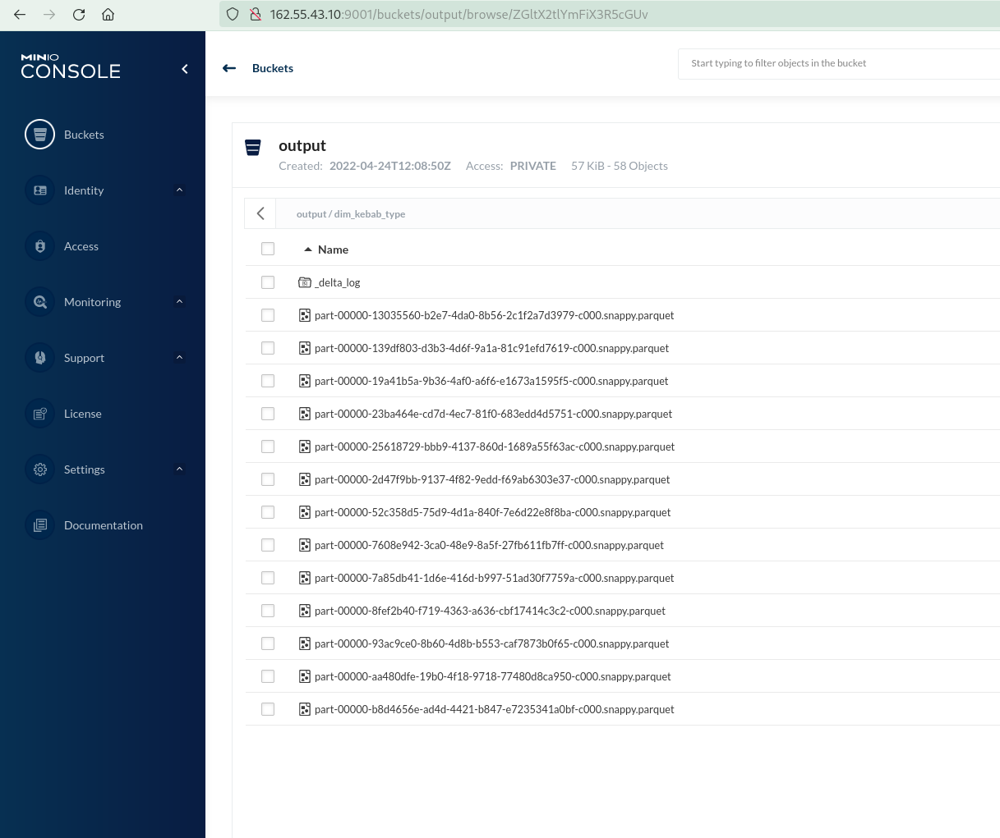Building the base image
- Get Spark
git clone https://github.com/apache/spark- Choose your version (wisely...)
git checkout tags/v3.2.1- Build a runnable distribution
./dev/make-distribution.sh --name demo -Dhadoop.version=3.3.1 \
-Pscala-2.12 -Pkubernetes- Build the base image(s)
./dist/bin/docker-image-tool.sh -r gcdotd -t v1.0 \
-p ./kubernetes/dockerfiles/spark/bindings/python/Dockerfile build
...
./dist/bin/docker-image-tool.sh -r gcdotd -t v1.0 push
Building the base image
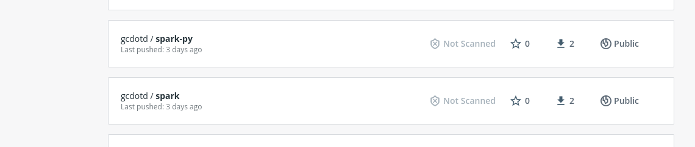Customising the image
FROM gcdotd/spark-py:v1.0
USER 0
# root
ADD https://repo1.maven.org/maven2/org/apache/hadoop/hadoop-aws/3.3.1/hadoop-aws-3.3.1.jar /opt/spark/jars
ADD https://repo1.maven.org/maven2/com/amazonaws/aws-java-sdk-bundle/1.11.901/aws-java-sdk-bundle-1.11.901.jar /opt/spark/jars
ADD https://repo1.maven.org/maven2/io/delta/delta-core_2.12/1.2.0/delta-core_2.12-1.2.0.jar /opt/spark/jars
ADD https://repo1.maven.org/maven2/io/delta/delta-contribs_2.12/1.2.0/delta-contribs_2.12-1.2.0.jar /opt/spark/jars
ADD https://repo1.maven.org/maven2/io/delta/delta-storage/1.2.0/delta-storage-1.2.0.jar /opt/spark/jars
ADD https://repo1.maven.org/maven2/org/codehaus/jackson/jackson-core-asl/1.9.13/jackson-core-asl-1.9.13.jar /opt/spark/jars
RUN chmod 644 /opt/spark/jars/hadoop-aws-3.3.1.jar \
&& chmod 644 /opt/spark/jars/aws-java-sdk-bundle-1.11.901.jar \
&& chmod 644 /opt/spark/jars/delta-core_2.12-1.2.0.jar \
&& chmod 644 /opt/spark/jars/delta-contribs_2.12-1.2.0.jar \
&& chmod 644 /opt/spark/jars/delta-storage-1.2.0.jar \
&& chmod 644 /opt/spark/jars/jackson-core-asl-1.9.13.jar
RUN pip install delta-spark==1.2.0
USER 185
# spark
docker build -t gcdotd/team_image:v1.0 .
docker push gcdotd/team_image:v1.0
Matching Jar Versions
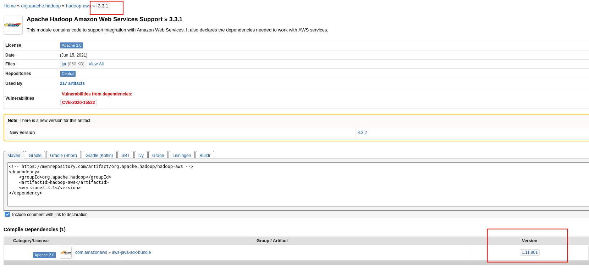Matching Jar Versions
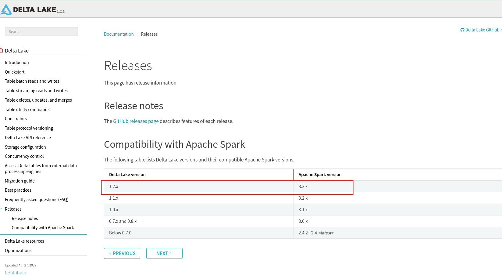Using the customised image
apiVersion: "sparkoperator.k8s.io/v1beta2"
kind: SparkApplication
metadata:
name: etl-team-image
namespace: spark-ns
spec:
type: Python
pythonVersion: "3"
mode: cluster
image: docker.io/gcdotd/team_image:v1.0
imagePullPolicy: IfNotPresent
mainApplicationFile: s3a://code/example.py
sparkVersion: "3.2.1"
restartPolicy:
type: OnFailure
onFailureRetries: 3
onFailureRetryInterval: 10
onSubmissionFailureRetries: 5
onSubmissionFailureRetryInterval: 20
timeToLiveSeconds: 300
sparkConf:
spark.sql.catalog.spark_catalog: "org.apache.spark.sql.delta.catalog.DeltaCatalog"
spark.sql.extensions: "io.delta.sql.DeltaSparkSessionExtension"
spark.driver.extraJavaOptions: "-Divy.cache.dir=/tmp -Divy.home=/tmp"
hadoopConf:
fs.s3a.endpoint: "http://162.55.43.10:9000"
fs.s3a.path.style.access: "true"
fs.s3a.impl: org.apache.hadoop.fs.s3a.S3AFileSystem
driver:
cores: 1
memory: "2g"
labels:
version: 3.2.1
serviceAccount: spark-svc-ac
envSecretKeyRefs:
AWS_ACCESS_KEY_ID:
name: s3-creds
key: username
AWS_SECRET_KEY:
name: s3-creds
key: password
executor:
cores: 1
instances: 1
memory: "2g"
labels:
version: 3.2.1
envSecretKeyRefs:
AWS_ACCESS_KEY_ID:
name: s3-creds
key: username
AWS_SECRET_KEY:
name: s3-creds
key: password
Dependencies
A useful library
# do_nothing.py
def do_nothing():
pass
Using the useful library
from pyspark.sql import SparkSession
from pyspark.sql.functions import md5, col, max as to_the_max, to_timestamp
from delta.tables import *
from os import path, environ
from do_nothing import do_nothing
do_nothing()
spark = SparkSession.builder.appName("etl-demo").getOrCreate()
source_path = "s3a://staging/"
output_path = "s3a://output/"
Dependencies from http
apiVersion: "sparkoperator.k8s.io/v1beta2"
kind: SparkApplication
metadata:
name: etl-team-image
namespace: spark-ns
spec:
type: Python
pythonVersion: "3"
mode: cluster
image: docker.io/gcdotd/team_image:v1.0
imagePullPolicy: IfNotPresent
mainApplicationFile: s3a://code/example_with_dependency.py
deps:
pyFiles:
- http://codeserver-svc:8086/do_nothing.py
The Adoption Maturity Model
- Standard image, code and dependencies external
-
spec: type: Python pythonVersion: "3" mode: cluster image: docker.io/gcdotd/team_image:v1.0 imagePullPolicy: IfNotPresent mainApplicationFile: s3a://code/example_with_dependency.py deps: pyFiles: - http://codeserver-svc:8086/do_nothing.py - Project-wide dependencies bundled, application external
-
#project/Dockerfile FROM gcdotd/team_image:v1.0 COPY do_nothing.py /tmp/do_nothing.py -
spec: type: Python pythonVersion: "3" mode: cluster image: docker.io/gcdotd/project_image:v1.0 imagePullPolicy: IfNotPresent mainApplicationFile: s3a://code/example_with_dependency.py deps: pyFiles: - local:///tmp/do_nothing.py
The Adoption Maturity Model
#job/Dockerfile
FROM gcdotd/project_image:v1.0
COPY example_with_dependency.py /tmp/example_with_dependency.py
spec:
type: Python
pythonVersion: "3"
mode: cluster
image: docker.io/gcdotd/job_image:v1.0
imagePullPolicy: IfNotPresent
mainApplicationFile: local:///tmp/example_with_dependency.py
deps:
pyFiles:
- local:///tmp/do_nothing.py
What have we gained?
- Teams can adopt at their own pace
- Start with a Standard Image
- Add Shared Libraries
- Create Job-specific images
- Code runs the same way everywhere
- Everyone has the same version of everything
- Internal Libraries are standardised
- Runs anywhere Kubernetes can run
- In the cloud
- In the datacentre
- On the desktop*
What about monitoring?
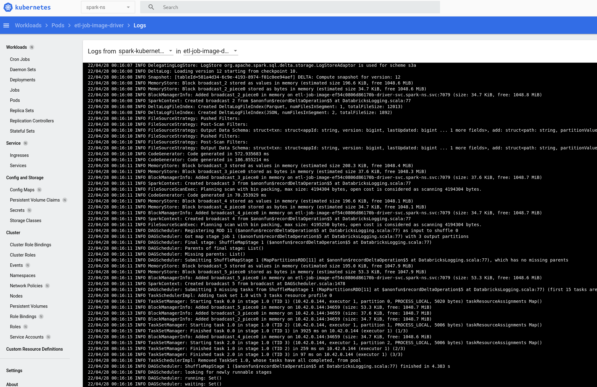What about monitoring?
Azure Arc-enabled Kubernetes
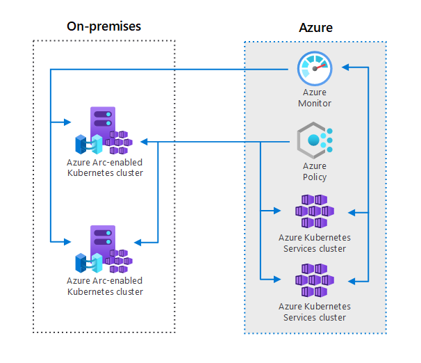Azure Arc-enabled Kubernetes
- Connect Kubernetes running outside of Azure for inventory, grouping, and tagging.
- Deploy applications and apply configuration using GitOps-based configuration management.
- View and monitor your clusters using Azure Monitor for containers.
- Enforce threat protection using Microsoft Defender for Kubernetes.
- Apply policy definitions using Azure Policy for Kubernetes.
- Use Azure Active Directory for authentication and authorization checks on your cluster.
- Securely access your Kubernetes cluster from anywhere without opening inbound port on firewall using Cluster Connect.
- Deploy Open Service Mesh on top of your cluster for observability and policy enforcement on service-to-service interactions
- Deploy machine learning workloads using Azure Machine Learning for Kubernetes clusters.
- Create custom locations as target locations for deploying Azure Arc-enabled Data Services (SQL Managed Instances, PostgreSQL Hyperscale.), App Services on Azure Arc (including web, function, and logic apps), and Event Grid on Kubernetes.
Azure Arc-enabled Kubernetes
- Connect Kubernetes running outside of Azure for inventory, grouping, and tagging.
- Deploy applications and apply configuration using GitOps-based configuration management.
- View and monitor your clusters using Azure Monitor for containers.
- Enforce threat protection using Microsoft Defender for Kubernetes.
- Apply policy definitions using Azure Policy for Kubernetes.
- Use Azure Active Directory for authentication and authorization checks on your cluster.
- Securely access your Kubernetes cluster from anywhere without opening inbound port on firewall using Cluster Connect.
- Deploy Open Service Mesh on top of your cluster for observability and policy enforcement on service-to-service interactions
- Deploy machine learning workloads using Azure Machine Learning for Kubernetes clusters.
- Create custom locations as target locations for deploying Azure Arc-enabled Data Services (SQL Managed Instances, PostgreSQL Hyperscale.), App Services on Azure Arc (including web, function, and logic apps), and Event Grid on Kubernetes.
Connecting a cluster to Azure
# https://docs.microsoft.com/en-us/azure/azure-arc/kubernetes/quickstart-connect-cluster?tabs=azure-cli
az extension add --name connectedk8s
az extension add -n k8s-configuration
az extension add -n k8s-extension
az provider register --namespace Microsoft.Kubernetes
az provider register --namespace Microsoft.KubernetesConfiguration
az provider register --namespace Microsoft.ExtendedLocation
az provider register --namespace Microsoft.ContainerService
#Wait!
az group create --name ArcDemo --location northeurope
az connectedk8s connect --name SparkK8sDemo --resource-group ArcDemo
az k8s-extension create --name azuremonitor-containers --cluster-name SparkK8sDemo --resource-group ArcDemo \
--cluster-type connectedClusters --extension-type Microsoft.AzureMonitor.Containers
The Arc-enabled Cluster
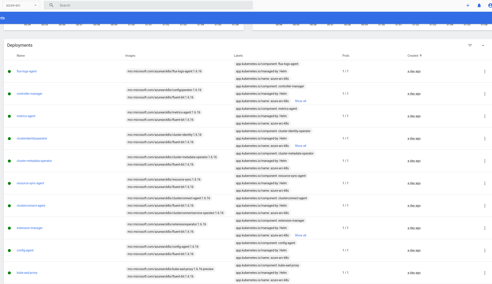The Arc-enabled Cluster
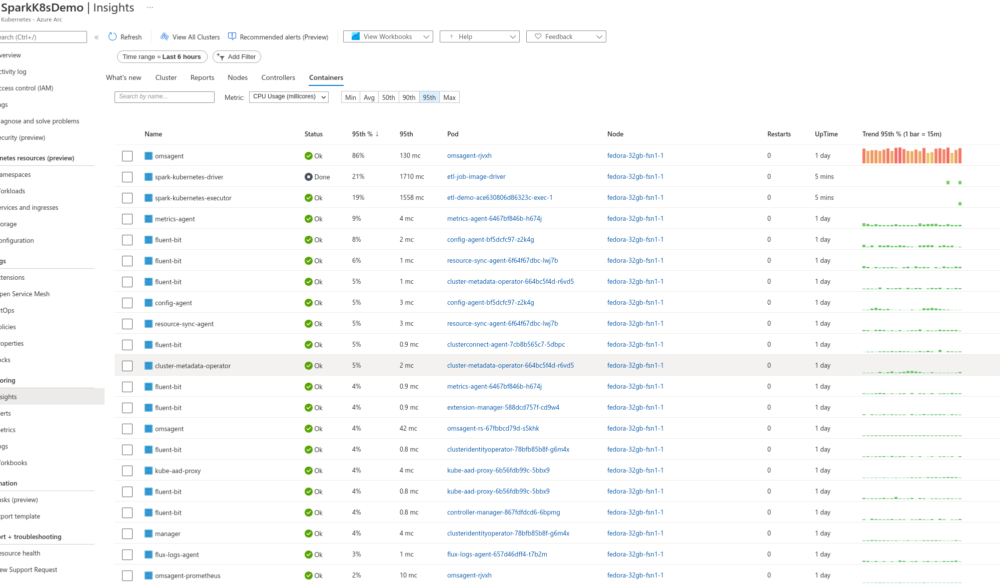Spark Logs in Azure Monitor
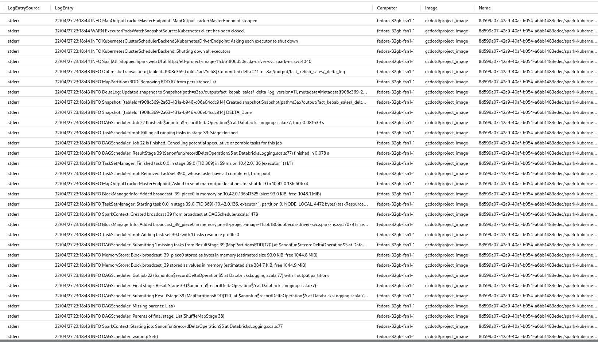Downloads
https://github.com/gavincampbell-dev-example-repos/spark-k8s-operator-presentation